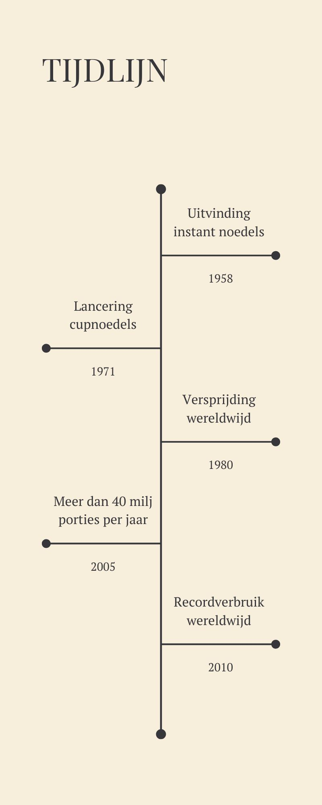

Instant noedels zijn snelle en makkelijke maaltijden
die populair zijn over heel de wereld. Je leest hier verder over de geschiedenis van instante
noedels en hier rechts zie je een tijdlijn.
Instante noedels zijn ontstaan in Japan door Momofuku Ando.
Met zijn product kon je water toevoegen bij de noedels. Het is dus snel en handig.
In 1971 bracht Nissin foods, cup noedels uit. Dat zijn instante noedels in een
wegwerp beker. Dit maakte de noedels nog populairder.In de jaren 80 en 90 werd het verkocht in supermarkten eenwerd het
product steeds populairder. Nu in het heden is het product nogsteeds heel populair door
de efficiëntie ervan en de lekkere smaak!
